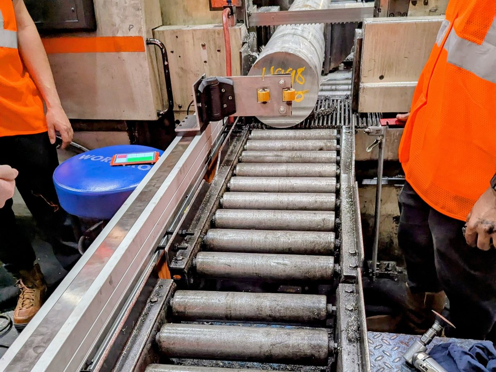
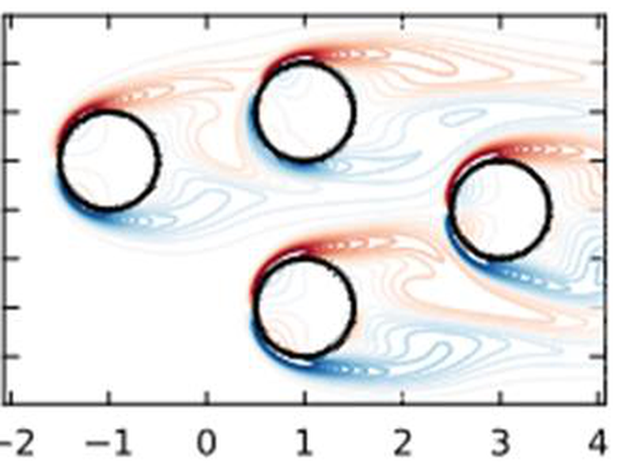
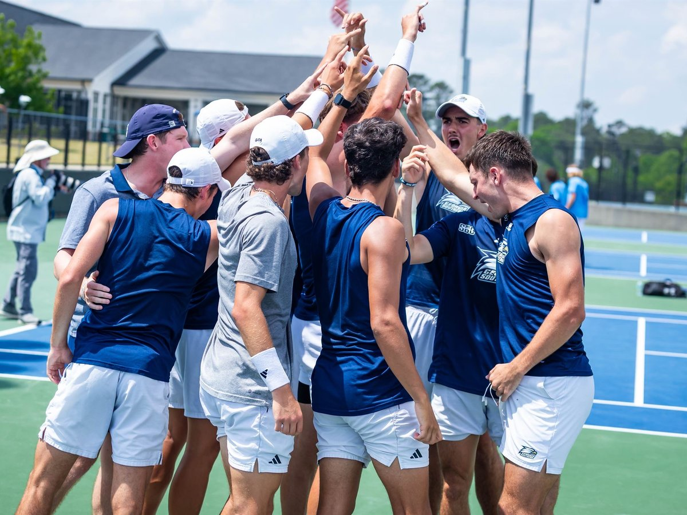

Robot learning · Controls · Embedded systems
I program robots that learn and the embedded hardware that lets them sense the world.
M.S. Mechanical Engineering candidate at Rensselaer Polytechnic Institute (May 2027), researching robot learning in the John Wen Research Group. Interested in making robot policies that let robots adapt, sense, and act in the real world as well as learning the control techniques that make them safe and reliable, while choosing the appropriate sensors and the firmware that makes it all work at once. I am looking for robotics and controls engineering roles starting May 2027, and open to internships before then. I get most excited about building things that help people, medical robotics especially, but I am up for any challenge.
Training manipulation policies from human demonstrations: VLAs, diffusion policies, flow matching, and the teleoperation and simulation infrastructure that feeds them.
From strain-gauge bridges to BLE firmware on Nordic and ESP32 chips, to LQR and adaptive control, to choosing the sensor, writing the firmware, and closing the loop.
Learning from Demonstration for VLA control of the OARbot
Can a robot learn a complex, multi-step task from human demonstrations alone, without anyone writing the task down as code? I am fine-tuning vision-language-action models on the OARbot, a 7-DOF Kinova arm on an omnidirectional mobile base, while running the whole arc from literature review and task design through robot bring-up, demonstration collection, fine-tuning and evaluation.
Center for Smart Convergent Manufacturing Systems, RPI
I 3D-printed and assembled a LeRobot SO-101 arm, collected demonstration data by teleoperation, and trained several policy families on it — then built the simulation side so training did not depend on the physical robot being free.
R&D Hardware Engineer: sensing, firmware, energy
A connected medical-adherence device. I own the sensing architecture, the microcontroller firmware and the battery model. ViaDose is currently in stealth mode, so details here are deliberately light.

Project Manager: senior capstone for Howmet Aerospace
Howmet's saw operators were measuring aerospace billet with a handheld tape measure, accurate to about 1/16 in. Cuts came out underweight and the material could not be recovered. My team's job was to automate the measurement without replacing the saw.
Team of 4: Robotics course, RPI
We made a 5-DOF DOFBOT arm reproduce Microsoft Paint sketches on paper. An image goes in; OpenCV extracts and downsamples its contours; inverse kinematics turns every contour point into joint angles; and a spring-loaded Sharpie end-effector we designed and 3D-printed keeps the pen on the page while the arm draws.
Adaptive Systems & Reinforcement Learning, RPI
The acrobot is a two-link pendulum actuated only at the elbow, an underactuated benchmark that is easy to state and hard to balance. Our system swings it up with a DQN policy, then hands off to my adaptive LQR to catch and hold it upright.

Fire and Energy Laboratory, Georgia Southern
How fast a wildfire moves depends on how wind flows through vegetation, which depends on drag. I implemented a finite-volume immersed boundary method on a Julia Navier–Stokes solver to compute drag coefficients for rigid and flexible vegetation, simulating cylinder arrays at the Reynolds numbers wind actually reaches around pine needles (Re ≈ 140–307). The method validated against five published studies (Cₓ 1.29 vs 1.25–1.34), and its outputs feed fire-spread models like WFDS. Presented at the 2024 GSU Student Research Symposium.

Georgia Southern men's tennis
Four years as a Division I student-athlete while carrying a full engineering course load — 20+ hours of training a week. Led the team as captain to the 2024 Sun Belt Regular Season Championship and the program's first year-end national ranking (No. 66 of 264). Named Georgia Southern Student-Athlete of the Year, 2023–24.